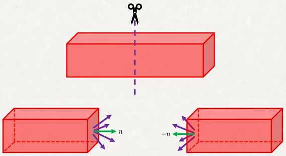
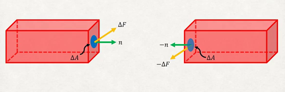
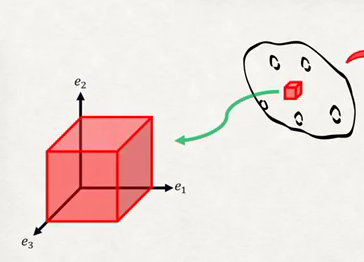
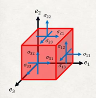
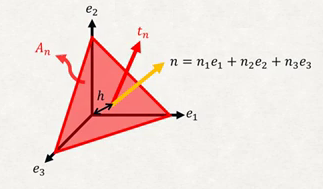
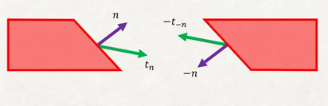
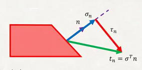

Sonsuz Küçük Gerilme Tensörü (Infinitesimal Strain Tensor)
Green gerilme tensörünü gördük, kuvvetli bir yaklaşım ama bizim daha çok kullanacağımız şimdi anlatacağımız. Niye? Çünkü Green tensörü sonlu değişimler için geçerli ama çoğu uygulamada bize lazım olan çok ufak yamulmalar. Ufak değişimler derken, önceki dersteki (3) formülünden hareketle, oradaki en son terimi hatırlarsak, çok ufak yamulmalar için $\nabla u^T \nabla u << \nabla u$ olur, yani ufak değişimlerde o karesel işlem $\nabla u$'dan daha ufak sonuç verir. O zaman belli durumlarda son terim yaklaşık sıfır kabul edilebilir, $\nabla u^T \nabla u \approx 0$. O zaman Green tensörü bu durumlarda yaklaşık olarak alttaki gibi olur,
$$ \epsilon_{Green} \approx \frac{1}{2} (\nabla u + \nabla u^T ) $$
Bileşen formunda
$$ \epsilon_{ij} = \left( \frac{\partial u_i}{\partial X_j} + \frac{\partial u_j}{\partial X_i} \right) $$
Bu tensör de simetrik, fakat sadece ufak şekil değişimleri, yamulmalar için geçerli. Fakat zaten, mesela inşaat mühendisliği durumunda, binalar, demir çubuklar (beam) ile iş yaptığımız zaman, bu tür şekil değişimi faraziyesi yeterli. Çünkü eh, biraz düşünürsek eğer binamız büyük şekil değişimleri yaşıyorsa önümüzde daha büyük bir problem var demektir.
Cauchy Stres Tensörü
Gerilme tensöründen stres tensörlerine geldik. İlk önce çekiş (traction) ya da stres vektöründen bahsedeceğiz. Diyelim ki elimizde bir çubuk var, onu ortadan kestiğimizi düşünelim, ve iki parça ortaya çıkıyor. Şimdi belki lisans seviyesi Statik dersinden hatırlayanlar olabilir, bir nesneyi (sanal olarak) kesince onun iç kuvvetlerini serbest bırakmış oluyoruz.

Kesit düzleminden bahsedelim önce, kesit tam dik olabilir ama bu şart değil, nasıl olursa olsun o düzleme dik olan bir $\vec{n}$ vektörü ile bu kesitin duruşunu temsil edebiliriz.
Bu serbest bırakılmış iç kuvvetler darmadağın gözüküyor. Bir $\Delta A$ alanı tanımlayıp o alandaki tüm kuvvetleri alıp toplarsak bir $\Delta F$ elde edebiliriz, bu tek vektör daha derli toplu.

$\vec{n}$ ile tanımlı bir nokta etrafındaki düzlemin çekiş vektörünü (yani bir noktadaki stres vektörü) şimdi şöyle tanımlıyoruz,
$$ t_n = \lim_{\Delta A \to 0} \frac{\Delta F}{\Delta A} $$
Newton'un hareket kanunu üzerinden tabii ki sol taraftaki çekiş ile sağ taraftaki birbirini dengelemeli, $t_n = -t_{-n}$.
Çekiş vektörü için formel tanım böyle. Ama kimse formel tanımı pek sevmiyor sözel şekilde anlatırsak, çubuğu aldım ve kestim, Statik dersi der ki kaykılma (shear), normal kuvvet ve eğilme momentimi böylece elde ederim. Bu üç boyutlu nesnelerde olan şudur, çubuğu kesiyorum ve bileşenleri stres öğeleri olan tek bir vektör elde ediyorum.
Şimdi çekiş vektörü kavramını daha basitleştirmeye uğraşalım. Bunun için patatesimize geri dönüyoruz. Patatesten üç boyutlu sonsuz küçük küp şeklinde bir parça çıkarttığımızı düşünelim şimdi,

Bu ufak parça nesnenin bütünlüğünden çıkartıldığı için çekiş vektörlerinin bu küpün yüzlerine etki eden stres vektörleri olduğunu söyleyebiliriz.
Küp sekli iyi bir seçim aslında çünkü her yüz kordinat eksendeki bir baz düzleme paralel. Ayrıca $t_{e_1}$, $t_{e_2}$, $t_{e_3}$ yerine de daha iyi bir temsil şekli bulabiliriz, küpün her yüzündeki bu $t$ çekiş vektörlerini de üç parçaya ayırabiliriz,

Bu şekildeki temsilin iyi bir tarafı her yüzdeki üç vektörün orijindeki baz vektörlerle birebir uyuşması. O zaman mesela $t_{e_3}$'u o baz vektörlerin lineer bir kombinasyonu olarak yazabilirim,
$$ t_{e_3} = \sigma_{31} e_1 + \sigma_{32} e_2 + \sigma_{33} e_3 $$
Üsttekini herhangi bir yüzey için yazarsak, yani $e_i$'in dik olduğu bir yüzey için
$$ t_{e_i} = \sigma_{ij} e_j $$
Einstein notasyonu kullandık, bu notasyonla her $i$ için mümkün tüm $j$'lerin üç tane terimi ortaya çıkardığı kabul edilir.
Küpün yüzlerindeki çekiş vektörünü gösterebiliyoruz, fakat acaba herhangi bir yöne bakan bir yüzey için stres vektörü ne olurdu? Bu ifadeyi genel bir şekilde yazmak mümkün, hem bunu göstermek (ve ileride ispat etmek) için Cauchy Stres Tetrahedon'u denen bir kurguyu anlatmamız lazım.

Tetrahedon üstteki gibi tanıdık bir şekil. Cauchy Lemma'sı ve Cauchy Kanununa göre
$$ t_n = \sigma^T n $$
olarak belirtilebilir, detaylı olarak belirtirsek,
$$ \left[\begin{array}{ccc} t_{n1} \\ t_{n2} \\ t_{n3} \end{array}\right] = \left[\begin{array}{ccc} \sigma_{11} & \sigma_{21} & \sigma_{31} \\ \sigma_{12} & \sigma_{22} & \sigma_{32} \\ \sigma_{13} & \sigma_{23} & \sigma_{33} \end{array}\right] \left[\begin{array}{ccc} n_1 \\ n_2 \\ n_3 \end{array}\right] $$
Bu formüldeki $\sigma$ Cauchy stres tensörü olarak adlandırılır. Üstteki ifade şunu söylemiş oluyor aslında, üstünde kuvvet etkileri olan bir katı cisim bize verilince yönden bağımsız bir Cauchy stres tensörü $\sigma$ elde edebiliriz, yani öyle bir $\sigma$ vardır ki $n$ yönündeki $t_n$ elde etmek için $t_n = \sigma^T n$ yapılabilir.
Cauchy tensörü hakkında bazı ispatlar için [1, sf. 330].
Cauchy tensörünün bazı özellikleri,
1) $\sigma$ simetriktir, yani $\sigma_{ij} = \sigma_{ji}$.
2) Öyle bir kordinat sistemi vardır ki bu sistemde $\sigma$ köşegendir. Lineer cebirde köşegenleştirme vardır bildiğimiz gibi, burada o teknik uygulanır, bu şekilde asal stresleri (principle stresses) denen stres vektörleri elde edilebilir.
3) Feragat / teslim / esneme yüzeyi (yield surfaces) denen bir hesabı bu tensör üzerinden yapmak mümkün.
Normal ve Kaykılma Stresleri
Çekiş vektörü kavramının bir daha üzerinden geçelim, formülü gördük ama kavramsal olarak neyden bahsediyoruz? İki boyuttaki kütleye bakalım, onu herhangi bir düzlemle kestim diyelim,

Kesim yüzeyini normal vektörü ile tanımlıyoruz. Çekiş vektörü bir objenin iç streslerinin bir yüzeye yansımasıdır. Dikkat, bu iç streslerin, kuvvetlerin vektörsel bileşimleri illa ki yüzeyin normal vektörü ile aynı yönde olmayabilir, onun için üstteki şekilde farklı yöne bakan bir $t_n$ gösteriliyor. Muhakkak diğer parçada ona eşit dengeliyici reaksiyon var, vs.
Şimdi çekiş vektörünün bileşenlerine gelelim, $t_n$ daha önce belirttik stres tensoru çarpı $n$.

Bileşen bağlamında $t_n$'i alıp $n$ üzerine skalar olarak yansıtabilirim, $\sigma_n$ büyüklüğünü elde ederim, ona normal stres diyelim. Bu bir skalar büyüklük, hesabı
$$ \sigma_n = \mathrm{proj}_n t_n = \frac{t_n \cdot n}{||n||} $$
Üstteki hesap aslında daha da basitleşebilir çünkü $n$'nin norm'ü 1'e eşittir yani $||n||=1$, o zaman geriye sadece $\sigma_n = t_n \cdot n$ kalıyor.
Yüzeye paralel olan bileşen kaykılma stresi (resimde kırmızı renkli $\tau_n$) için artık basit bir vektör çıkartım işlemi yeterli, resme göre
$$ t_n = \vec{\sigma}_n + \vec{\tau}_n $$
olduğuna göre basit bir tekrar düzenleme sonrası,
$$ \vec{\tau}_n = \vec{t}_n - \vec{\sigma}_n $$
elde edilir. Yanlız $\vec{\sigma}_n$ vektörü kullanıldı, daha önce $\sigma_n$ skalar demiştik, vektörü nasıl elde ediyoruz? Bu basit, $\vec{\sigma}_n$ yönsel olarak normal vektör $n$, ya da $\vec{n}$ ile aynı yönde olacağı için, eh $\vec{n}$ zaten birim vektördür o zaman $\vec{\sigma}_n$ için $\vec{n}$ ile $\sigma_n$ çarpılması yeterli,
$$ \vec{\tau}_n = \vec{t}_n - \sigma_n n $$
Asal Stresler
FEM programlarında karşımıza çıkan bir kavram bu. Eğer $\sigma$ simetrik ise stres tensörünün özvektörleriyle eş olan öyle bir kordinat sistemi vardır ki bu sistemde stres tensörü köşegen haline gelir (kaykılma stresi kalmaz). Bu bir köşegenleştirme operasyonu aslında. Daha önce üzerinde stres öğeleri olan küpü göstermiştik, köşegenleştirme ile yapılan bu küpü öyle bir çevirmek ki kaykılma bileşeni kalmasın.
$Q$ vektörü stres tensörünün özvektörlerinden oluşuyor, 1'inci özvektör $Q$'nun 1'inci satırına ikinci özvektör ikinci satırına, vs. Bu Lineer Cebirden bildiğimiz köşegenleştirme operasyonu tabii ki, yapmaya uğraştığımız $\sigma$'yi köşegenleştirip bir $\sigma'$ elde etmek,
$$ \sigma = \left[\begin{array}{ccc} \sigma_{11} & \sigma_{21} & \sigma_{31} \\ \sigma_{12} & \sigma_{22} & \sigma_{32} \\ \sigma_{13} & \sigma_{23} & \sigma_{33} \end{array}\right] \implies \sigma' = Q \sigma Q^T = \left[\begin{array}{ccc} \sigma_I & 0 & 0 \\ 0 & \sigma_{II} & 0 \\ 0 & 0 & \sigma_{III} \end{array}\right] $$
ki $\sigma_I$, $\sigma_{II}$, $\sigma_{III}$ $\sigma$'nin özdeğerleridir, elde edilen özdeğerler büyükten küçüğe doğru sıralanır, $\sigma_I > \sigma_{II} > \sigma_{III}$ olacak şekilde.
[devam edecek]
Kaynaklar
[1] Kelly, Solid Mechanics Part III, Auckland University